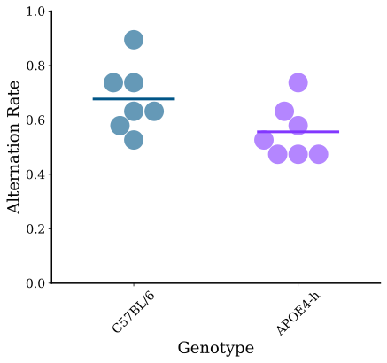
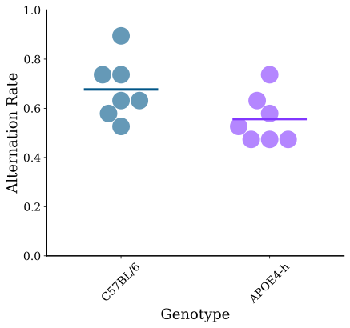

Setup the bootstrap for power analysis
Example of post hoc power analysis
Example of a priori power analysis
Positive Predictive Value
Setup the bootstrap for power analysis
Example of post hoc power analysis
Example of a priori power analysis
Positive Predictive Value
If the null hypothesis is true:
If $\alpha=0.05$, there is a 5% chance of a Type I error
If the null hypothesis is true:
If $\alpha=0.01$, there is a 1% chance of a Type I error
For each test, the probability of making a Type I error is $\alpha$.
Each test is carried out at $\alpha=0.05$, so the risk of making a Type I error (rejecting the null when we should not) is $5\%$ each time.
The risk of making a Type I errors increases as we multiply the number of tests on the same data:
We need to make multiple comparisons with an overall Type I error of $\alpha=0.05$ (or whichever level is specified). We need an alternative approach that uses one overall test that compares all means at once.
In a test at $\alpha = 0.05$, there is a 5% chance of getting a false positive if the null hypothesis is true. In 100 tests, each at $\alpha = 0.05$, we "expect 5 false positives" if all 100 null hypotheses are true, but really, the probability of getting $k$ false-positives is determinable through the binomial distribution, $p(k\, |\, \alpha)$.
We can calculate the probability of getting exactly one false positive, but we rarely care if there's only 1.
Instead, we care usually if one or more false positives occur.
How can we reduce the probability of making a Type II Error
That is, how could we increase the probability of rejecting the null when the null hypothesis is rejectable, i.e., false?
1 Increase the sample size
2 Increase the significance level
Increase $\alpha$ to reduce the chance of Type II error.
Decrease $\alpha$ to reduce the chance of Type I error.
| Decision | |||
| Reject H$_0$ | Do not reject H$_0$ | ||
| Truth | H$_0$ true |
$\alpha$: Type I Error Probability of false positive. |
$1-\alpha$ Probability of true negative. |
| H$_0$ false |
$1-\beta$: Statistical Power Probability of true positive. |
$\beta$: Type II Error Probability of false negative. |
|
Statistical Power is the probability of rejecting the null hypothesis when it is false.
Power depends heavily on the effect size of the alternative hypothesis, and the sample sizes of the study.
The power of a test can be calculated by integrating the sampling distribution of the test statistic under the alternative hypothesis from the critical value to positive infinity.

Scenario: Assess the impact of APOE gene variations on spatial learning and memory in mice using the T-maze spontaneous alternation task.
We have alternation rates for two groups of mice:
We want to test the difference in alternation rates between the two groups: $\Delta\hat{p} = \hat{p}_{\text{APOE4-h}} - \hat{p}_{\text{C57BL/6}} = 0.120\, (0.015,\, 0.226)$
We need to consider the Null and Effects distributions.
T-Maze Task
Testing spatial memory in APOE knockout vs wild-type mice
 

Using the One Box NHST Bootstrap, we can generate the Null Distribution of the test statistic.
Here is the familiar NHST Null Distribution, specifying an $\alpha$ level of 0.05, we can set a critical level threshold at $H_{0,\text{crit}} = 0.128$
T-Maze Task
The null distribution
Using the Differences Bootstrap (Two Box Effects), we can generate the Effect Size Distribution of the test statistic.
If we consider this a True Effect, we can calculate the power of the test by integrating the distribution from the critical value of the Null Distribution to positive infinity.
T-Maze Task
The Effects distribution
The Type II Error Rate is the area under the Effects distribution less extreme than the Null critical value.
That is:
$\beta = P(\text{Type II Error}) = P(\text{Fail to reject } H_0 | H_1 \text{ is true})$
The power of the test is the area under the Effects distribution more extreme than the Null critical value.
That is:
$1-\beta = P(\text{Power}) = P(\text{Reject } H_0 | H_1 \text{ is true})$
Statistical Power Analysis is a crucial aspect of experimental design, used to determine the likelihood that a study will detect an effect when there is an effect to be detected. It addresses two types of errors:
There are two primary types of power analysis:
Understanding and applying these analyses help ensure that engineering studies are designed efficiently, with sufficient power to yield meaningful results.
In a prospective cohort study of 50,282 gravidas and their offspring, congentical malformation rates were similar in the children of over 1,000 women exposed and those not exposed to two components of Bendectin (doxylamine succinate and dicyclomine hydrochloride) during the first four lunar months of pregnancy. $\ldots$ The data presented here give no evidence that [Bendectin] taken during pregnancy are related to congenital malformations. $\ldots$ Bendectin does not appear to be harmful for the fetus.
What is the problem with this statement
How can we test if the study had enough power to detect a difference if one existed
| Malformations | Exposed (No. = 1,169) | Not exposed (No. = 49,113) | Standardized Relative Risk | ||
|---|---|---|---|---|---|
| No. | % | No. | % | ||
| Uniform | 55 | 4.7 | 2,222 | 4.5 | 1.07 |
| Major | 36 | 3.1 | 1,357 | 2.8 | 1.06 |
| Central nervous | 7 | 0.6 | 259 | 0.5 | 1.23 |
| Cardiovascular | 5 | 0.4 | 399 | 0.8 | 0.61 |
| Musculoskeletal | 13 | 1.1 | 382 | 0.8 | 1.15 |
| Respiratory | 7 | 0.6 | 211 | 0.4 | 1.30 |
| Gastrointestinal | 12 | 1.0 | 289 | 0.6 | 1.46 |
| Hypospadias | 5 | 0.9 | 182 | 0.7 | 1.43 |
| Other genitourinary | 2 | 0.2 | 182 | 0.4 | 0.39 |
| Eye and ear | 2 | 0.2 | 119 | 0.2 | 0.64 |
| Syndromes | 3 | 0.3 | 112 | 0.2 | 1.10 |
| Tumors | 1 | 0.1 | 163 | 0.3 | 0.21 |
Data:
| Bendectin | Control | |
|---|---|---|
| Malformed | 148 | 5876 |
| Normal | 1021 | 43237 |
Expected Table:
| Bendectin | Control | |
|---|---|---|
| Malformed | 140.05 | 5883.95 |
| Normal | 1028.95 | 43229.05 |
For 1,169 exposed and 49,113 controls:
$\chi^2 = 0.5247$ and $|\chi| = 0.0660$, with 1 degree of freedom.
$p_{\chi^2} = 0.468$, $p_{|\chi|} = 0.4618$
If there were an association, the power of the this study to actually detect it was $\approx 12\%$.
| Malformations | Exposed (No. = 1,169) | Not exposed (No. = 49,113) | Standardized Relative Risk | ||
|---|---|---|---|---|---|
| No. | % | No. | % | ||
| Uniform | 55 | 4.7 | 2,222 | 4.5 | 1.07 |
| Major | 36 | 3.1 | 1,357 | 2.8 | 1.06 |
| Central nervous | 7 | 0.6 | 259 | 0.5 | 1.23 |
| Cardiovascular | 5 | 0.4 | 399 | 0.8 | 0.61 |
| Musculoskeletal | 13 | 1.1 | 382 | 0.8 | 1.15 |
| Respiratory | 7 | 0.6 | 211 | 0.4 | 1.30 |
| Gastrointestinal | 12 | 1.0 | 289 | 0.6 | 1.46 |
| Hypospadias | 5 | 0.9 | 182 | 0.7 | 1.43 |
| Other genitourinary | 2 | 0.2 | 182 | 0.4 | 0.39 |
| Eye and ear | 2 | 0.2 | 119 | 0.2 | 0.64 |
| Syndromes | 3 | 0.3 | 112 | 0.2 | 1.10 |
| Tumors | 1 | 0.1 | 163 | 0.3 | 0.21 |
Interestingly, the authors did not directly calculate relative risk from the overall counts. After splitting into multiple categories, they systematically ignored high risk categories.
Relative Risk
For the matrix:
$$ \begin{array}{|c|c|c|c|} \hline & \text{Outcome Present} & \text{Outcome Absent} & \text{Total} \\ \hline \text{Exposed} & A & B & A + B \\ \hline \text{Not Exposed} & C & D & C + D \\ \hline \text{Total} & A + C & B + D & N \\ \hline \end{array} $$For the Bendectin study: $RR = \frac{148/(148+5876)}{1021/(1021+43237)} = 1.0650$ ($p = 0.1437$)
Let's run a power analysis to see if this study had enough power to detect this effect.
Resample a contingency table using multinomial resampling.
Parameters:
data_array: 2D NumPy array representing the contingency table.axis: Axis along which to perform the resampling.
isnull: Boolean indicating whether to use uniform probabilities (default is False).Returns:
resampled_table: 2D NumPy array of the resampled contingency table.
def resample_table(data_array, axis=None, isnull=False):
rng = np.random.default_rng()
if axis is None:
# Resample the entire table as a single multinomial distribution
total = data_array.sum()
if isnull:
probabilities = np.ones(data_array.size) / data_array.size
else:
probabilities = data_array.flatten() / total
resampled_flat = rng.multinomial(total, probabilities)
resampled_table = resampled_flat.reshape(data_array.shape)
else:
# Resample along the specified axis
def multinomial_resample_1d(counts):
total = counts.sum()
if isnull:
probabilities = np.ones_like(counts) / len(counts)
else:
probabilities = counts / total
return rng.multinomial(total, probabilities)
resampled_table = np.apply_along_axis(multinomial_resample_1d, axis, data_array)
return resampled_table
Compute the risk along the specified axis in a contingency table.
Parameters:
table: 2x2 NumPy array or Pandas DataFrame.axis: Axis along which to compute the risk.
Returns:
Risk values: NumPy array.
def get_risk(table, axis=0):
if isinstance(table, pd.DataFrame):
table = table.values
# Sum along the specified axis
sums = table.sum(axis=axis, keepdims=True)
# Compute risk
risks = table / sums
return risks
def get_relative_risk(table, target, axis=1):
if isinstance(table, pd.DataFrame):
if axis == 1: # Comparing columns, target is a row name
target_idx = table.index.get_loc(target)
else: # axis == 0, comparing rows, target is a column name
target_idx = table.columns.get_loc(target)
table = table.values
else:
target_idx = target # Assume target is an index if table is a NumPy array
# Compute risks along the perpendicular axis
risks = get_risk(table, axis=(axis+1)%2)
if axis == 1: # Relative risk across columns for the specified row
relative_risk = risks[target_idx, 0] / risks[target_idx, 1]
else: # axis == 0, relative risk across rows for the specified column
relative_risk = risks[0, target_idx] / risks[1, target_idx]
return relative_risk
def bootstrap_relative_risk(table,target,axis=1,B=10000):
col_names = table.columns.tolist()
row_names = table.index.tolist()
data_array = table.to_numpy()
rr_actual = get_relative_risk(table,target,axis)
# Initialize arrays to store bootstrap results
rr_effect = np.zeros(B)
rr_null = np.zeros(B)
# Total count in the table
total_count = data_array.sum()
perp_axis = (axis + 1) % 2
for b in range(B):
# Bootstrap resampling for effect estimation
resampled_table = pd.DataFrame(
resample_table(data_array,axis=perp_axis,isnull=False),
columns=col_names,
index=row_names
)
# Calculate relative risk for the resampled table
rr_effect[b] = get_relative_risk(resampled_table, target, axis)
# Permutation for null hypothesis testing
permuted_table = pd.DataFrame(
resample_table(data_array,axis=axis,isnull=True),
columns=col_names,
index= row_names
)
# Calculate relative risk for the permuted table
rr_null[b] = get_relative_risk(permuted_table, target, axis)
return {
"RelRisk": rr_actual,
"Null": rr_null,
"Effect": rr_effect
}
The relative risk is 1.0650 ($p = 0.1437$).
From bootstrap analysis, we see that the Type II Error Rate is 70%.
The power to detect this effect is 30%.
An a priori power analysis is conducted before a study begins to ensure that it is adequately powered to detect the expected effect. This type of analysis is crucial for determining the necessary sample size to achieve a specified level of statistical power, often set at 80% to minimize Type II errors.
A research grup is trying to com up with a surgical technique that reduces the risk of impotency due to prostate surgery.
A venture capitalist involved in the project thinks interest in the project will be high if the current risk is reduced by 50% or more.
After some due diligence, the group has determined that the current risk is 40%, and the target reduced risk is 20%.
If the group's Null Hypothesis test is fixed at a false positive rate of 5%, what sample size will be required to detect a 50% reduction in risk with a false negative rate of $\beta=0.05$? $\beta = 0.20$?
We have no control over the outcome (impotency), but we can control the exposure (surgical technique).
We do have control over how many people we subject to each type of surgery, \( n_{\text{old}} \) and \( n_{\text{new}} \). These numbers are fixed:
And the risks are defined as:
$ RR = \frac{\text{risk}_{\text{new}}}{\text{risk}_{\text{old}}} $
To compute the power, we have to simulate the sampling distributions for two different hypotheses about the risk ratio.
Let's start by simulating the Null Distribution with $n=20$.
# Define parameters
n_surgery = np.array([20, 20]) # (new, old)
risk = 0.40 # Common for both groups
alpha = 0.05
deals = 10000 # Number of simulations
# Initialize array to store risk ratio values
RR_b = np.empty(deals)
# Simulation loop
for i in range(deals):
# The null hypothesis is that the risks are equal.
# Simulate both around the old surgery's risk.
new_b = np.random.choice(
["impotent", "normal"],
size=n_surgery[0], p=[risk, 1-risk]
)
old_b = np.random.choice(
["impotent", "normal"],
size=n_surgery[1], p=[risk, 1-risk]
)
# Count the number of "impotent" cases in each group
n_impotent_b = np.array([
np.sum(new_b == "impotent"),
np.sum(old_b == "impotent")
])
# Compute risk ratio
risk_b = n_impotent_b / n_surgery # Risk in each group
# Add small constant to denominator to prevent divide by zero
RR_b[i] = risk_b[0] / (risk_b[1] + 1e-10) # Relative Risk
# Compute critical value
RR_null = RR_b
RR_crit = np.quantile(RR_null, alpha, method='median_unbiased')
And the Effects:
n_surgery = np.array([20, 20]) # (new, old)
risk = np.array([0.20, 0.40]) # (new, old)
alpha = 0.05
deals = 10000 # Number of simulations
# Initialize array to store risk ratio values
RR_b = np.empty(deals)
# Simulation loop
for i in range(deals):
# Simulate around the new effect size.
new_b = np.random.choice(
["impotent", "normal"],
size=n_surgery[0], p=[risk[0], 1-risk[0]]
)
old_b = np.random.choice(
["impotent", "normal"],
size=n_surgery[1], p=[risk[1], 1-risk[1]]
)
# Count the number of "impotent" cases in each group
n_impotent_b = np.array([
np.sum(new_b == "impotent"),
np.sum(old_b == "impotent")
])
# Compute risk ratio
risk_b = n_impotent_b / n_surgery # Risk in each group
# Add small constant to denominator to prevent divide by zero
RR_b[i] = risk_b[0] / (risk_b[1] + 1e-10) # Relative Risk
# Store effect size results
RR_effect = RR_b
# Compute beta and power
beta = np.sum(RR_effect >= RR_crit) / deals
power = np.sum(RR_effect <= RR_crit) / deals
# Define sample sizes
n_sizes = np.arange(5,120,5)
# Initialize arrays to store risk ratio values and power calculations
RR_b = np.empty(10000) # deals = 10000
power = np.empty(len(n_sizes))
alpha = 0.05
deals = 10000 # Number of simulations
risk_null = 0.40
risk_effect = np.array([0.20, 0.40])
# Loop through different sample sizes
for j, n in enumerate(n_sizes):
n_surgery = np.array([n, n]) # (new, old)
# Initialize arrays for both null and effect distributions
RR_null = np.empty(deals)
RR_effect = np.empty(deals)
# Run both simulations in the same loop
for i in range(deals):
# NULL DISTRIBUTION - equal risks
new_outcomes_null = simulate_surgery_outcomes(n_surgery[0], risk_null)
old_outcomes_null = simulate_surgery_outcomes(n_surgery[1], risk_null)
# Compute risk ratio for null
risk_b_null = new_outcomes_null[0] / new_outcomes_null[1]
risk_b_null_old = old_outcomes_null[0] / old_outcomes_null[1]
RR_null[i] = risk_b_null / (risk_b_null_old + 1e-10)
# EFFECT DISTRIBUTION - different risks
new_outcomes_effect = simulate_surgery_outcomes(n_surgery[0], risk_effect[0])
old_outcomes_effect = simulate_surgery_outcomes(n_surgery[1], risk_effect[1])
# Compute risk ratio for effect
risk_b_effect = new_outcomes_effect[0] / new_outcomes_effect[1]
risk_b_effect_old = old_outcomes_effect[0] / old_outcomes_effect[1]
RR_effect[i] = risk_b_effect / (risk_b_effect_old + 1e-10)
# Compute critical value from null distribution
RR_crit = np.sort(RR_null)[int(alpha * deals)]
power[j] = np.sum(RR_effect <= RR_crit) / deals
# Helper Function
def simulate_surgery_outcomes(n, risk):
outcomes = np.random.choice(["impotent", "normal"], size=n, p=[risk, 1-risk])
n_impotent = np.sum(outcomes == "impotent")
return np.array([n_impotent, n])